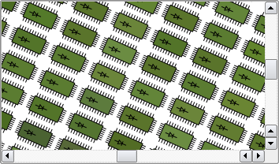

QGraphicsView Class
The QGraphicsView class provides a widget for displaying the contents of a QGraphicsScene. More...
| Header: | #include <QGraphicsView> |
| CMake: | find_package(Qt6 REQUIRED COMPONENTS Widgets) target_link_libraries(mytarget PRIVATE Qt6::Widgets) |
| qmake: | QT += widgets |
| Inherits: | QAbstractScrollArea |
Public Types
| flags | CacheMode |
| enum | CacheModeFlag { CacheNone, CacheBackground } |
| enum | DragMode { NoDrag, ScrollHandDrag, RubberBandDrag } |
| enum | OptimizationFlag { DontSavePainterState, DontAdjustForAntialiasing, IndirectPainting } |
| flags | OptimizationFlags |
| enum | ViewportAnchor { NoAnchor, AnchorViewCenter, AnchorUnderMouse } |
| enum | ViewportUpdateMode { FullViewportUpdate, MinimalViewportUpdate, SmartViewportUpdate, BoundingRectViewportUpdate, NoViewportUpdate } |
Properties
|
|
Public Functions
| QGraphicsView(QWidget *parent = nullptr) | |
| QGraphicsView(QGraphicsScene *scene, QWidget *parent = nullptr) | |
| virtual | ~QGraphicsView() |
| Qt::Alignment | alignment() const |
| QBrush | backgroundBrush() const |
| QGraphicsView::CacheMode | cacheMode() const |
| void | centerOn(const QPointF &pos) |
| void | centerOn(qreal x, qreal y) |
| void | centerOn(const QGraphicsItem *item) |
| QGraphicsView::DragMode | dragMode() const |
| void | ensureVisible(const QRectF &rect, int xmargin = 50, int ymargin = 50) |
| void | ensureVisible(qreal x, qreal y, qreal w, qreal h, int xmargin = 50, int ymargin = 50) |
| void | ensureVisible(const QGraphicsItem *item, int xmargin = 50, int ymargin = 50) |
| void | fitInView(const QRectF &rect, Qt::AspectRatioMode aspectRatioMode = Qt::IgnoreAspectRatio) |
| void | fitInView(qreal x, qreal y, qreal w, qreal h, Qt::AspectRatioMode aspectRatioMode = Qt::IgnoreAspectRatio) |
| void | fitInView(const QGraphicsItem *item, Qt::AspectRatioMode aspectRatioMode = Qt::IgnoreAspectRatio) |
| QBrush | foregroundBrush() const |
| bool | isInteractive() const |
| bool | isTransformed() const |
| QGraphicsItem * | itemAt(const QPoint &pos) const |
| QGraphicsItem * | itemAt(int x, int y) const |
| QList<QGraphicsItem *> | items() const |
| QList<QGraphicsItem *> | items(const QPoint &pos) const |
| QList<QGraphicsItem *> | items(int x, int y) const |
| QList<QGraphicsItem *> | items(const QRect &rect, Qt::ItemSelectionMode mode = Qt::IntersectsItemShape) const |
| QList<QGraphicsItem *> | items(int x, int y, int w, int h, Qt::ItemSelectionMode mode = Qt::IntersectsItemShape) const |
| QList<QGraphicsItem *> | items(const QPolygon &polygon, Qt::ItemSelectionMode mode = Qt::IntersectsItemShape) const |
| QList<QGraphicsItem *> | items(const QPainterPath &path, Qt::ItemSelectionMode mode = Qt::IntersectsItemShape) const |
| QPoint | mapFromScene(const QPointF &point) const |
| QPolygon | mapFromScene(const QRectF &rect) const |
| QPolygon | mapFromScene(const QPolygonF &polygon) const |
| QPainterPath | mapFromScene(const QPainterPath &path) const |
| QPoint | mapFromScene(qreal x, qreal y) const |
| QPolygon | mapFromScene(qreal x, qreal y, qreal w, qreal h) const |
| QPointF | mapToScene(const QPoint &point) const |
| QPolygonF | mapToScene(const QRect &rect) const |
| QPolygonF | mapToScene(const QPolygon &polygon) const |
| QPainterPath | mapToScene(const QPainterPath &path) const |
| QPointF | mapToScene(int x, int y) const |
| QPolygonF | mapToScene(int x, int y, int w, int h) const |
| QGraphicsView::OptimizationFlags | optimizationFlags() const |
| void | render(QPainter *painter, const QRectF &target = QRectF(), const QRect &source = QRect(), Qt::AspectRatioMode aspectRatioMode = Qt::KeepAspectRatio) |
| QPainter::RenderHints | renderHints() const |
| void | resetCachedContent() |
| void | resetTransform() |
| QGraphicsView::ViewportAnchor | resizeAnchor() const |
| void | rotate(qreal angle) |
| QRect | rubberBandRect() const |
| Qt::ItemSelectionMode | rubberBandSelectionMode() const |
| void | scale(qreal sx, qreal sy) |
| QGraphicsScene * | scene() const |
| QRectF | sceneRect() const |
| void | setAlignment(Qt::Alignment alignment) |
| void | setBackgroundBrush(const QBrush &brush) |
| void | setCacheMode(QGraphicsView::CacheMode mode) |
| void | setDragMode(QGraphicsView::DragMode mode) |
| void | setForegroundBrush(const QBrush &brush) |
| void | setInteractive(bool allowed) |
| void | setOptimizationFlag(QGraphicsView::OptimizationFlag flag, bool enabled = true) |
| void | setOptimizationFlags(QGraphicsView::OptimizationFlags flags) |
| void | setRenderHint(QPainter::RenderHint hint, bool enabled = true) |
| void | setRenderHints(QPainter::RenderHints hints) |
| void | setResizeAnchor(QGraphicsView::ViewportAnchor anchor) |
| void | setRubberBandSelectionMode(Qt::ItemSelectionMode mode) |
| void | setScene(QGraphicsScene *scene) |
| void | setSceneRect(const QRectF &rect) |
| void | setSceneRect(qreal x, qreal y, qreal w, qreal h) |
| void | setTransform(const QTransform &matrix, bool combine = false) |
| void | setTransformationAnchor(QGraphicsView::ViewportAnchor anchor) |
| void | setViewportUpdateMode(QGraphicsView::ViewportUpdateMode mode) |
| void | shear(qreal sh, qreal sv) |
| QTransform | transform() const |
| QGraphicsView::ViewportAnchor | transformationAnchor() const |
| void | translate(qreal dx, qreal dy) |
| QTransform | viewportTransform() const |
| QGraphicsView::ViewportUpdateMode | viewportUpdateMode() const |
Reimplemented Public Functions
| virtual QVariant | inputMethodQuery(Qt::InputMethodQuery query) const override |
| virtual QSize | sizeHint() const override |
Public Slots
| void | invalidateScene(const QRectF &rect = QRectF(), QGraphicsScene::SceneLayers layers = QGraphicsScene::AllLayers) |
| void | updateScene(const QList<QRectF> &rects) |
| void | updateSceneRect(const QRectF &rect) |
Signals
| void | rubberBandChanged(QRect rubberBandRect, QPointF fromScenePoint, QPointF toScenePoint) |
Protected Functions
| virtual void | drawBackground(QPainter *painter, const QRectF &rect) |
| virtual void | drawForeground(QPainter *painter, const QRectF &rect) |
Reimplemented Protected Functions
| virtual void | contextMenuEvent(QContextMenuEvent *event) override |
| virtual void | dragEnterEvent(QDragEnterEvent *event) override |
| virtual void | dragLeaveEvent(QDragLeaveEvent *event) override |
| virtual void | dragMoveEvent(QDragMoveEvent *event) override |
| virtual void | dropEvent(QDropEvent *event) override |
| virtual bool | event(QEvent *event) override |
| virtual void | focusInEvent(QFocusEvent *event) override |
| virtual bool | focusNextPrevChild(bool next) override |
| virtual void | focusOutEvent(QFocusEvent *event) override |
| virtual void | inputMethodEvent(QInputMethodEvent *event) override |
| virtual void | keyPressEvent(QKeyEvent *event) override |
| virtual void | keyReleaseEvent(QKeyEvent *event) override |
| virtual void | mouseDoubleClickEvent(QMouseEvent *event) override |
| virtual void | mouseMoveEvent(QMouseEvent *event) override |
| virtual void | mousePressEvent(QMouseEvent *event) override |
| virtual void | mouseReleaseEvent(QMouseEvent *event) override |
| virtual void | paintEvent(QPaintEvent *event) override |
| virtual void | resizeEvent(QResizeEvent *event) override |
| virtual void | scrollContentsBy(int dx, int dy) override |
| virtual void | showEvent(QShowEvent *event) override |
| virtual bool | viewportEvent(QEvent *event) override |
| virtual void | wheelEvent(QWheelEvent *event) override |
Protected Slots
| virtual void | setupViewport(QWidget *widget) override |
Detailed Description
QGraphicsView visualizes the contents of a QGraphicsScene in a scrollable viewport. To create a scene with geometrical items, see QGraphicsScene's documentation. QGraphicsView is part of the Graphics View Framework.
To visualize a scene, you start by constructing a QGraphicsView object, passing the address of the scene you want to visualize to QGraphicsView's constructor. Alternatively, you can call setScene() to set the scene at a later point. After you call show(), the view will by default scroll to the center of the scene and display any items that are visible at this point. For example:
QGraphicsScene scene; scene.addText("Hello, world!"); QGraphicsView view(&scene); view.show();
You can explicitly scroll to any position on the scene by using the scroll bars, or by calling centerOn(). By passing a point to centerOn(), QGraphicsView will scroll its viewport to ensure that the point is centered in the view. An overload is provided for scrolling to a QGraphicsItem, in which case QGraphicsView will see to that the center of the item is centered in the view. If all you want is to ensure that a certain area is visible, (but not necessarily centered,) you can call ensureVisible() instead.
QGraphicsView can be used to visualize a whole scene, or only parts of it. The visualized area is by default detected automatically when the view is displayed for the first time (by calling QGraphicsScene::itemsBoundingRect()). To set the visualized area rectangle yourself, you can call setSceneRect(). This will adjust the scroll bars' ranges appropriately. Note that although the scene supports a virtually unlimited size, the range of the scroll bars will never exceed the range of an integer (INT_MIN, INT_MAX).
QGraphicsView visualizes the scene by calling render(). By default, the items are drawn onto the viewport by using a regular QPainter, and using default render hints. To change the default render hints that QGraphicsView passes to QPainter when painting items, you can call setRenderHints().
By default, QGraphicsView provides a regular QWidget for the viewport widget. You can access this widget by calling viewport(), or you can replace it by calling setViewport(). To render using OpenGL, simply call setViewport(new QOpenGLWidget). QGraphicsView takes ownership of the viewport widget.
QGraphicsView supports affine transformations, using QTransform. You can either pass a matrix to setTransform(), or you can call one of the convenience functions rotate(), scale(), translate() or shear(). The most two common transformations are scaling, which is used to implement zooming, and rotation. QGraphicsView keeps the center of the view fixed during a transformation. Because of the scene alignment (setAlignment()), translating the view will have no visual impact.
You can interact with the items on the scene by using the mouse and keyboard. QGraphicsView translates the mouse and key events into scene events, (events that inherit QGraphicsSceneEvent,), and forward them to the visualized scene. In the end, it's the individual item that handles the events and reacts to them. For example, if you click on a selectable item, the item will typically let the scene know that it has been selected, and it will also redraw itself to display a selection rectangle. Similarly, if you click and drag the mouse to move a movable item, it's the item that handles the mouse moves and moves itself. Item interaction is enabled by default, and you can toggle it by calling setInteractive().
You can also provide your own custom scene interaction, by creating a subclass of QGraphicsView, and reimplementing the mouse and key event handlers. To simplify how you programmatically interact with items in the view, QGraphicsView provides the mapping functions mapToScene() and mapFromScene(), and the item accessors items() and itemAt(). These functions allow you to map points, rectangles, polygons and paths between view coordinates and scene coordinates, and to find items on the scene using view coordinates.
When using a QOpenGLWidget as a viewport, stereoscopic rendering is supported. This is done using the same pattern as QOpenGLWidget::paintGL. To enable it, enable the QSurfaceFormat::StereoBuffers flag. Because of how the flag is handled internally, set QSurfaceFormat::StereoBuffers flag globally before the window is created using QSurfaceFormat::setDefaultFormat(). If the flag is enabled and there is hardware support for stereoscopic rendering, then drawBackground() and drawForeground() will be triggered twice each frame. Call QOpenGLWidget::currentTargetBuffer() to query which buffer is currently being drawn to.

Note: Using an OpenGL viewport limits the ability to use QGraphicsProxyWidget. Not all combinations of widgets and styles can be supported with such a setup. You should carefully test your UI and make the necessary adjustments.
See also QGraphicsScene, QGraphicsItem, and QGraphicsSceneEvent.
Member Type Documentation
enum QGraphicsView::CacheModeFlag
flags QGraphicsView::CacheMode
This enum describes the flags that you can set for a QGraphicsView's cache mode.
| Constant | Value | Description |
|---|---|---|
QGraphicsView::CacheNone | 0x0 | All painting is done directly onto the viewport. |
QGraphicsView::CacheBackground | 0x1 | The background is cached. This affects both custom backgrounds, and backgrounds based on the backgroundBrush property. When this flag is enabled, QGraphicsView will allocate one pixmap with the full size of the viewport. |
The CacheMode type is a typedef for QFlags<CacheModeFlag>. It stores an OR combination of CacheModeFlag values.
See also cacheMode.
enum QGraphicsView::DragMode
This enum describes the default action for the view when pressing and dragging the mouse over the viewport.
| Constant | Value | Description |
|---|---|---|
QGraphicsView::NoDrag | 0 | Nothing happens; the mouse event is ignored. |
QGraphicsView::ScrollHandDrag | 1 | The cursor changes into a pointing hand, and dragging the mouse around will scroll the scrolbars. This mode works both in interactive and non-interactive mode. |
QGraphicsView::RubberBandDrag | 2 | A rubber band will appear. Dragging the mouse will set the rubber band geometry, and all items covered by the rubber band are selected. This mode is disabled for non-interactive views. |
See also dragMode and QGraphicsScene::setSelectionArea().
enum QGraphicsView::OptimizationFlag
flags QGraphicsView::OptimizationFlags
This enum describes flags that you can enable to improve rendering performance in QGraphicsView. By default, none of these flags are set. Note that setting a flag usually imposes a side effect, and this effect can vary between paint devices and platforms.
| Constant | Value | Description |
|---|---|---|
QGraphicsView::DontSavePainterState | 0x1 | When rendering, QGraphicsView protects the painter state (see QPainter::save()) when rendering the background or foreground, and when rendering each item. This allows you to leave the painter in an altered state (i.e., you can call QPainter::setPen() or QPainter::setBrush() without restoring the state after painting). However, if the items consistently do restore the state, you should enable this flag to prevent QGraphicsView from doing the same. |
QGraphicsView::DontAdjustForAntialiasing | 0x2 | Disables QGraphicsView's antialiasing auto-adjustment of exposed areas. Items that render antialiased lines on the boundaries of their QGraphicsItem::boundingRect() can end up rendering parts of the line outside. To prevent rendering artifacts, QGraphicsView expands all exposed regions by 2 pixels in all directions. If you enable this flag, QGraphicsView will no longer perform these adjustments, minimizing the areas that require redrawing, which improves performance. A common side effect is that items that do draw with antialiasing can leave painting traces behind on the scene as they are moved. |
QGraphicsView::IndirectPainting | 0x4 | Since Qt 4.6, restore the old painting algorithm that calls QGraphicsView::drawItems() and QGraphicsScene::drawItems(). To be used only for compatibility with old code. |
The OptimizationFlags type is a typedef for QFlags<OptimizationFlag>. It stores an OR combination of OptimizationFlag values.
enum QGraphicsView::ViewportAnchor
This enums describe the possible anchors that QGraphicsView can use when the user resizes the view or when the view is transformed.
| Constant | Value | Description |
|---|---|---|
QGraphicsView::NoAnchor | 0 | No anchor, i.e. the view leaves the scene's position unchanged. |
QGraphicsView::AnchorViewCenter | 1 | The scene point at the center of the view is used as the anchor. |
QGraphicsView::AnchorUnderMouse | 2 | The point under the mouse is used as the anchor. |
See also resizeAnchor and transformationAnchor.
enum QGraphicsView::ViewportUpdateMode
This enum describes how QGraphicsView updates its viewport when the scene contents change or are exposed.
| Constant | Value | Description |
|---|---|---|
QGraphicsView::FullViewportUpdate | 0 | When any visible part of the scene changes or is reexposed, QGraphicsView will update the entire viewport. This approach is fastest when QGraphicsView spends more time figuring out what to draw than it would spend drawing (e.g., when very many small items are repeatedly updated). This is the preferred update mode for viewports that do not support partial updates, such as QOpenGLWidget, and for viewports that need to disable scroll optimization. |
QGraphicsView::MinimalViewportUpdate | 1 | QGraphicsView will determine the minimal viewport region that requires a redraw, minimizing the time spent drawing by avoiding a redraw of areas that have not changed. This is QGraphicsView's default mode. Although this approach provides the best performance in general, if there are many small visible changes on the scene, QGraphicsView might end up spending more time finding the minimal approach than it will spend drawing. |
QGraphicsView::SmartViewportUpdate | 2 | QGraphicsView will attempt to find an optimal update mode by analyzing the areas that require a redraw. |
QGraphicsView::BoundingRectViewportUpdate | 4 | The bounding rectangle of all changes in the viewport will be redrawn. This mode has the advantage that QGraphicsView searches only one region for changes, minimizing time spent determining what needs redrawing. The disadvantage is that areas that have not changed also need to be redrawn. |
QGraphicsView::NoViewportUpdate | 3 | QGraphicsView will never update its viewport when the scene changes; the user is expected to control all updates. This mode disables all (potentially slow) item visibility testing in QGraphicsView, and is suitable for scenes that either require a fixed frame rate, or where the viewport is otherwise updated externally. |
See also viewportUpdateMode.
Property Documentation
alignment : Qt::Alignment
This property holds the alignment of the scene in the view when the whole scene is visible.
If the whole scene is visible in the view, (i.e., there are no visible scroll bars,) the view's alignment will decide where the scene will be rendered in the view. For example, if the alignment is Qt::AlignCenter, which is default, the scene will be centered in the view, and if the alignment is (Qt::AlignLeft | Qt::AlignTop), the scene will be rendered in the top-left corner of the view.
Access functions:
| Qt::Alignment | alignment() const |
| void | setAlignment(Qt::Alignment alignment) |
backgroundBrush : QBrush
This property holds the background brush of the scene.
This property sets the background brush for the scene in this view. It is used to override the scene's own background, and defines the behavior of drawBackground(). To provide custom background drawing for this view, you can reimplement drawBackground() instead.
By default, this property contains a brush with the Qt::NoBrush pattern.
Access functions:
| QBrush | backgroundBrush() const |
| void | setBackgroundBrush(const QBrush &brush) |
See also QGraphicsScene::backgroundBrush and foregroundBrush.
cacheMode : CacheMode
This property holds which parts of the view are cached
QGraphicsView can cache pre-rendered content in a QPixmap, which is then drawn onto the viewport. The purpose of such caching is to speed up the total rendering time for areas that are slow to render. Texture, gradient and alpha blended backgrounds, for example, can be notibly slow to render; especially with a transformed view. The CacheBackground flag enables caching of the view's background. For example:
QGraphicsView view; view.setBackgroundBrush(QImage(":/images/backgroundtile.png")); view.setCacheMode(QGraphicsView::CacheBackground);
The cache is invalidated every time the view is transformed. However, when scrolling, only partial invalidation is required.
By default, nothing is cached.
Access functions:
| QGraphicsView::CacheMode | cacheMode() const |
| void | setCacheMode(QGraphicsView::CacheMode mode) |
See also resetCachedContent() and QPixmapCache.
dragMode : DragMode
This property holds the behavior for dragging the mouse over the scene while the left mouse button is pressed.
This property defines what should happen when the user clicks on the scene background and drags the mouse (e.g., scrolling the viewport contents using a pointing hand cursor, or selecting multiple items with a rubber band). The default value, NoDrag, does nothing.
This behavior only affects mouse clicks that are not handled by any item. You can define a custom behavior by creating a subclass of QGraphicsView and reimplementing mouseMoveEvent().
Access functions:
| QGraphicsView::DragMode | dragMode() const |
| void | setDragMode(QGraphicsView::DragMode mode) |
foregroundBrush : QBrush
This property holds the foreground brush of the scene.
This property sets the foreground brush for the scene in this view. It is used to override the scene's own foreground, and defines the behavior of drawForeground(). To provide custom foreground drawing for this view, you can reimplement drawForeground() instead.
By default, this property contains a brush with the Qt::NoBrush pattern.
Access functions:
| QBrush | foregroundBrush() const |
| void | setForegroundBrush(const QBrush &brush) |
See also QGraphicsScene::foregroundBrush and backgroundBrush.
interactive : bool
This property holds whether the view allows scene interaction.
If enabled, this view is set to allow scene interaction. Otherwise, this view will not allow interaction, and any mouse or key events are ignored (i.e., it will act as a read-only view).
By default, this property is true.
Access functions:
| bool | isInteractive() const |
| void | setInteractive(bool allowed) |
optimizationFlags : OptimizationFlags
flags that can be used to tune QGraphicsView's performance.
QGraphicsView uses clipping, extra bounding rect adjustments, and certain other aids to improve rendering quality and performance for the common case graphics scene. However, depending on the target platform, the scene, and the viewport in use, some of these operations can degrade performance.
The effect varies from flag to flag; see the OptimizationFlags documentation for details.
By default, no optimization flags are enabled.
Access functions:
| QGraphicsView::OptimizationFlags | optimizationFlags() const |
| void | setOptimizationFlags(QGraphicsView::OptimizationFlags flags) |
See also setOptimizationFlag().
renderHints : QPainter::RenderHints
This property holds the default render hints for the view
These hints are used to initialize QPainter before each visible item is drawn. QPainter uses render hints to toggle rendering features such as antialiasing and smooth pixmap transformation.
QPainter::TextAntialiasing is enabled by default.
Example:
QGraphicsScene scene; scene.addRect(QRectF(-10, -10, 20, 20)); QGraphicsView view(&scene); view.setRenderHints(QPainter::Antialiasing | QPainter::SmoothPixmapTransform); view.show();
Access functions:
| QPainter::RenderHints | renderHints() const |
| void | setRenderHints(QPainter::RenderHints hints) |
resizeAnchor : ViewportAnchor
how the view should position the scene when the view is resized.
QGraphicsView uses this property to decide how to position the scene in the viewport when the viewport widget's size changes. The default behavior, NoAnchor, leaves the scene's position unchanged during a resize; the top-left corner of the view will appear to be anchored while resizing.
Note that the effect of this property is noticeable when only a part of the scene is visible (i.e., when there are scroll bars). Otherwise, if the whole scene fits in the view, QGraphicsScene uses the view alignment to position the scene in the view.
Access functions:
| QGraphicsView::ViewportAnchor | resizeAnchor() const |
| void | setResizeAnchor(QGraphicsView::ViewportAnchor anchor) |
See also alignment and transformationAnchor.
rubberBandSelectionMode : Qt::ItemSelectionMode
This property holds the behavior for selecting items with a rubber band selection rectangle.
This property defines how items are selected when using the RubberBandDrag drag mode.
The default value is Qt::IntersectsItemShape; all items whose shape intersects with or is contained by the rubber band are selected.
Access functions:
| Qt::ItemSelectionMode | rubberBandSelectionMode() const |
| void | setRubberBandSelectionMode(Qt::ItemSelectionMode mode) |
See also dragMode, items(), and rubberBandRect().
sceneRect : QRectF
This property holds the area of the scene visualized by this view.
The scene rectangle defines the extent of the scene, and in the view's case, this means the area of the scene that you can navigate using the scroll bars.
If unset, or if a null QRectF is set, this property has the same value as QGraphicsScene::sceneRect, and it changes with QGraphicsScene::sceneRect. Otherwise, the view's scene rect is unaffected by the scene.
Note that, although the scene supports a virtually unlimited size, the range of the scroll bars will never exceed the range of an integer (INT_MIN, INT_MAX). When the scene is larger than the scroll bars' values, you can choose to use translate() to navigate the scene instead.
By default, this property contains a rectangle at the origin with zero width and height.
Access functions:
| QRectF | sceneRect() const |
| void | setSceneRect(const QRectF &rect) |
| void | setSceneRect(qreal x, qreal y, qreal w, qreal h) |
See also QGraphicsScene::sceneRect.
transformationAnchor : ViewportAnchor
how the view should position the scene during transformations.
QGraphicsView uses this property to decide how to position the scene in the viewport when the transformation matrix changes, and the coordinate system of the view is transformed. The default behavior, AnchorViewCenter, ensures that the scene point at the center of the view remains unchanged during transformations (e.g., when rotating, the scene will appear to rotate around the center of the view).
Note that the effect of this property is noticeable when only a part of the scene is visible (i.e., when there are scroll bars). Otherwise, if the whole scene fits in the view, QGraphicsScene uses the view alignment to position the scene in the view.
Access functions:
| QGraphicsView::ViewportAnchor | transformationAnchor() const |
| void | setTransformationAnchor(QGraphicsView::ViewportAnchor anchor) |
See also alignment and resizeAnchor.
viewportUpdateMode : ViewportUpdateMode
how the viewport should update its contents.
QGraphicsView uses this property to decide how to update areas of the scene that have been reexposed or changed. Usually you do not need to modify this property, but there are some cases where doing so can improve rendering performance. See the ViewportUpdateMode documentation for specific details.
The default value is MinimalViewportUpdate, where QGraphicsView will update as small an area of the viewport as possible when the contents change.
Access functions:
| QGraphicsView::ViewportUpdateMode | viewportUpdateMode() const |
| void | setViewportUpdateMode(QGraphicsView::ViewportUpdateMode mode) |
See also ViewportUpdateMode and cacheMode.
Member Function Documentation
QGraphicsView::QGraphicsView(QWidget *parent = nullptr)
Constructs a QGraphicsView. parent is passed to QWidget's constructor.
QGraphicsView::QGraphicsView(QGraphicsScene *scene, QWidget *parent = nullptr)
Constructs a QGraphicsView and sets the visualized scene to scene. parent is passed to QWidget's constructor.
[virtual noexcept] QGraphicsView::~QGraphicsView()
Destructs the QGraphicsView object.
void QGraphicsView::centerOn(const QPointF &pos)
Scrolls the contents of the viewport to ensure that the scene coordinate pos, is centered in the view.
Because pos is a floating point coordinate, and the scroll bars operate on integer coordinates, the centering is only an approximation.
Note: If the item is close to or outside the border, it will be visible in the view, but not centered.
See also ensureVisible().
void QGraphicsView::centerOn(qreal x, qreal y)
This is an overloaded function.
This function is provided for convenience. It's equivalent to calling centerOn(QPointF(x, y)).
void QGraphicsView::centerOn(const QGraphicsItem *item)
This is an overloaded function.
Scrolls the contents of the viewport to ensure that item is centered in the view.
See also ensureVisible().
[override virtual protected] void QGraphicsView::contextMenuEvent(QContextMenuEvent *event)
Reimplements: QAbstractScrollArea::contextMenuEvent(QContextMenuEvent *e).
[override virtual protected] void QGraphicsView::dragEnterEvent(QDragEnterEvent *event)
Reimplements: QAbstractScrollArea::dragEnterEvent(QDragEnterEvent *event).
[override virtual protected] void QGraphicsView::dragLeaveEvent(QDragLeaveEvent *event)
Reimplements: QAbstractScrollArea::dragLeaveEvent(QDragLeaveEvent *event).
[override virtual protected] void QGraphicsView::dragMoveEvent(QDragMoveEvent *event)
Reimplements: QAbstractScrollArea::dragMoveEvent(QDragMoveEvent *event).
[virtual protected] void QGraphicsView::drawBackground(QPainter *painter, const QRectF &rect)
Draws the background of the scene using painter, before any items and the foreground are drawn. Reimplement this function to provide a custom background for this view.
If all you want is to define a color, texture or gradient for the background, you can call setBackgroundBrush() instead.
All painting is done in scene coordinates. rect is the exposed rectangle.
The default implementation fills rect using the view's backgroundBrush. If no such brush is defined (the default), the scene's drawBackground() function is called instead.
See also drawForeground() and QGraphicsScene::drawBackground().
[virtual protected] void QGraphicsView::drawForeground(QPainter *painter, const QRectF &rect)
Draws the foreground of the scene using painter, after the background and all items are drawn. Reimplement this function to provide a custom foreground for this view.
If all you want is to define a color, texture or gradient for the foreground, you can call setForegroundBrush() instead.
All painting is done in scene coordinates. rect is the exposed rectangle.
The default implementation fills rect using the view's foregroundBrush. If no such brush is defined (the default), the scene's drawForeground() function is called instead.
See also drawBackground() and QGraphicsScene::drawForeground().
[override virtual protected] void QGraphicsView::dropEvent(QDropEvent *event)
Reimplements: QAbstractScrollArea::dropEvent(QDropEvent *event).
void QGraphicsView::ensureVisible(const QRectF &rect, int xmargin = 50, int ymargin = 50)
Scrolls the contents of the viewport so that the scene rectangle rect is visible, with margins specified in pixels by xmargin and ymargin. If the specified rect cannot be reached, the contents are scrolled to the nearest valid position. The default value for both margins is 50 pixels.
See also centerOn().
void QGraphicsView::ensureVisible(qreal x, qreal y, qreal w, qreal h, int xmargin = 50, int ymargin = 50)
This is an overloaded function.
This function is provided for convenience. It's equivalent to calling ensureVisible(QRectF(x, y, w, h), xmargin, ymargin).
void QGraphicsView::ensureVisible(const QGraphicsItem *item, int xmargin = 50, int ymargin = 50)
This is an overloaded function.
Scrolls the contents of the viewport so that the center of item item is visible, with margins specified in pixels by xmargin and ymargin. If the specified point cannot be reached, the contents are scrolled to the nearest valid position. The default value for both margins is 50 pixels.
See also centerOn().
[override virtual protected] bool QGraphicsView::event(QEvent *event)
Reimplements: QAbstractScrollArea::event(QEvent *event).
void QGraphicsView::fitInView(const QRectF &rect, Qt::AspectRatioMode aspectRatioMode = Qt::IgnoreAspectRatio)
Scales the view matrix and scrolls the scroll bars to ensure that the scene rectangle rect fits inside the viewport. rect must be inside the scene rect; otherwise, fitInView() cannot guarantee that the whole rect is visible.
This function keeps the view's rotation, translation, or shear. The view is scaled according to aspectRatioMode. rect will be centered in the view if it does not fit tightly.
It's common to call fitInView() from inside a reimplementation of resizeEvent(), to ensure that the whole scene, or parts of the scene, scales automatically to fit the new size of the viewport as the view is resized. Note though, that calling fitInView() from inside resizeEvent() can lead to unwanted resize recursion, if the new transformation toggles the automatic state of the scrollbars. You can toggle the scrollbar policies to always on or always off to prevent this (see horizontalScrollBarPolicy() and verticalScrollBarPolicy()).
If rect is empty, or if the viewport is too small, this function will do nothing.
See also setTransform(), ensureVisible(), and centerOn().
void QGraphicsView::fitInView(qreal x, qreal y, qreal w, qreal h, Qt::AspectRatioMode aspectRatioMode = Qt::IgnoreAspectRatio)
This is an overloaded function.
This convenience function is equivalent to calling fitInView(QRectF(x, y, w, h), aspectRatioMode).
See also ensureVisible() and centerOn().
void QGraphicsView::fitInView(const QGraphicsItem *item, Qt::AspectRatioMode aspectRatioMode = Qt::IgnoreAspectRatio)
This is an overloaded function.
Ensures that item fits tightly inside the view, scaling the view according to aspectRatioMode.
See also ensureVisible() and centerOn().
[override virtual protected] void QGraphicsView::focusInEvent(QFocusEvent *event)
Reimplements: QWidget::focusInEvent(QFocusEvent *event).
[override virtual protected] bool QGraphicsView::focusNextPrevChild(bool next)
Reimplements: QWidget::focusNextPrevChild(bool next).
[override virtual protected] void QGraphicsView::focusOutEvent(QFocusEvent *event)
Reimplements: QWidget::focusOutEvent(QFocusEvent *event).
[override virtual protected] void QGraphicsView::inputMethodEvent(QInputMethodEvent *event)
Reimplements: QWidget::inputMethodEvent(QInputMethodEvent *event).
[override virtual] QVariant QGraphicsView::inputMethodQuery(Qt::InputMethodQuery query) const
Reimplements: QWidget::inputMethodQuery(Qt::InputMethodQuery query) const.
[slot] void QGraphicsView::invalidateScene(const QRectF &rect = QRectF(), QGraphicsScene::SceneLayers layers = QGraphicsScene::AllLayers)
Invalidates and schedules a redraw of layers inside rect. rect is in scene coordinates. Any cached content for layers inside rect is unconditionally invalidated and redrawn.
You can call this function to notify QGraphicsView of changes to the background or the foreground of the scene. It is commonly used for scenes with tile-based backgrounds to notify changes when QGraphicsView has enabled background caching.
Note that QGraphicsView currently supports background caching only (see QGraphicsView::CacheBackground). This function is equivalent to calling update() if any layer but QGraphicsScene::BackgroundLayer is passed.
See also QGraphicsScene::invalidate() and update().
bool QGraphicsView::isTransformed() const
Returns true if the view is transformed (i.e., a non-identity transform has been assigned, or the scrollbars are adjusted).
See also setTransform(), horizontalScrollBar(), and verticalScrollBar().
QGraphicsItem *QGraphicsView::itemAt(const QPoint &pos) const
Returns the item at position pos, which is in viewport coordinates. If there are several items at this position, this function returns the topmost item.
Example:
void CustomView::mousePressEvent(QMouseEvent *event) { if (QGraphicsItem *item = itemAt(event->pos())) { qDebug() << "You clicked on item" << item; } else { qDebug("You didn't click on an item."); } }
QGraphicsItem *QGraphicsView::itemAt(int x, int y) const
This is an overloaded function.
This function is provided for convenience. It's equivalent to calling itemAt(QPoint(x, y)).
QList<QGraphicsItem *> QGraphicsView::items() const
Returns a list of all the items in the associated scene, in descending stacking order (i.e., the first item in the returned list is the uppermost item).
See also QGraphicsScene::items() and Sorting.
QList<QGraphicsItem *> QGraphicsView::items(const QPoint &pos) const
Returns a list of all the items at the position pos in the view. The items are listed in descending stacking order (i.e., the first item in the list is the uppermost item, and the last item is the lowermost item). pos is in viewport coordinates.
This function is most commonly called from within mouse event handlers in a subclass in QGraphicsView. pos is in untransformed viewport coordinates, just like QMouseEvent::pos().
void CustomView::mousePressEvent(QMouseEvent *event) { qDebug() << "There are" << items(event->pos()).size() << "items at position" << mapToScene(event->pos()); }
See also QGraphicsScene::items() and Sorting.
QList<QGraphicsItem *> QGraphicsView::items(int x, int y) const
This function is provided for convenience. It's equivalent to calling items(QPoint(x, y)).
QList<QGraphicsItem *> QGraphicsView::items(const QRect &rect, Qt::ItemSelectionMode mode = Qt::IntersectsItemShape) const
This is an overloaded function.
Returns a list of all the items that, depending on mode, are either contained by or intersect with rect. rect is in viewport coordinates.
The default value for mode is Qt::IntersectsItemShape; all items whose exact shape intersects with or is contained by rect are returned.
The items are sorted in descending stacking order (i.e., the first item in the returned list is the uppermost item).
See also itemAt(), items(), mapToScene(), and Sorting.
QList<QGraphicsItem *> QGraphicsView::items(int x, int y, int w, int h, Qt::ItemSelectionMode mode = Qt::IntersectsItemShape) const
This convenience function is equivalent to calling items(QRectF(x, y, w, h), mode).
QList<QGraphicsItem *> QGraphicsView::items(const QPolygon &polygon, Qt::ItemSelectionMode mode = Qt::IntersectsItemShape) const
This is an overloaded function.
Returns a list of all the items that, depending on mode, are either contained by or intersect with polygon. polygon is in viewport coordinates.
The default value for mode is Qt::IntersectsItemShape; all items whose exact shape intersects with or is contained by polygon are returned.
The items are sorted by descending stacking order (i.e., the first item in the returned list is the uppermost item).
See also itemAt(), items(), mapToScene(), and Sorting.
QList<QGraphicsItem *> QGraphicsView::items(const QPainterPath &path, Qt::ItemSelectionMode mode = Qt::IntersectsItemShape) const
This is an overloaded function.
Returns a list of all the items that, depending on mode, are either contained by or intersect with path. path is in viewport coordinates.
The default value for mode is Qt::IntersectsItemShape; all items whose exact shape intersects with or is contained by path are returned.
See also itemAt(), items(), mapToScene(), and Sorting.
[override virtual protected] void QGraphicsView::keyPressEvent(QKeyEvent *event)
Reimplements: QAbstractScrollArea::keyPressEvent(QKeyEvent *e).
[override virtual protected] void QGraphicsView::keyReleaseEvent(QKeyEvent *event)
Reimplements: QWidget::keyReleaseEvent(QKeyEvent *event).
QPoint QGraphicsView::mapFromScene(const QPointF &point) const
Returns the scene coordinate point to viewport coordinates.
See also mapToScene().
QPolygon QGraphicsView::mapFromScene(const QRectF &rect) const
Returns the scene rectangle rect to a viewport coordinate polygon.
See also mapToScene().
QPolygon QGraphicsView::mapFromScene(const QPolygonF &polygon) const
Returns the scene coordinate polygon polygon to a viewport coordinate polygon.
See also mapToScene().
QPainterPath QGraphicsView::mapFromScene(const QPainterPath &path) const
Returns the scene coordinate painter path path to a viewport coordinate painter path.
See also mapToScene().
QPoint QGraphicsView::mapFromScene(qreal x, qreal y) const
This function is provided for convenience. It's equivalent to calling mapFromScene(QPointF(x, y)).
QPolygon QGraphicsView::mapFromScene(qreal x, qreal y, qreal w, qreal h) const
This function is provided for convenience. It's equivalent to calling mapFromScene(QRectF(x, y, w, h)).
QPointF QGraphicsView::mapToScene(const QPoint &point) const
Returns the viewport coordinate point mapped to scene coordinates.
Note: It can be useful to map the whole rectangle covered by the pixel at point instead of the point itself. To do this, you can call mapToScene(QRect(point, QSize(2, 2))).
See also mapFromScene().
QPolygonF QGraphicsView::mapToScene(const QRect &rect) const
Returns the viewport rectangle rect mapped to a scene coordinate polygon.
See also mapFromScene().
QPolygonF QGraphicsView::mapToScene(const QPolygon &polygon) const
Returns the viewport polygon polygon mapped to a scene coordinate polygon.
See also mapFromScene().
QPainterPath QGraphicsView::mapToScene(const QPainterPath &path) const
Returns the viewport painter path path mapped to a scene coordinate painter path.
See also mapFromScene().
QPointF QGraphicsView::mapToScene(int x, int y) const
This function is provided for convenience. It's equivalent to calling mapToScene(QPoint(x, y)).
QPolygonF QGraphicsView::mapToScene(int x, int y, int w, int h) const
This function is provided for convenience. It's equivalent to calling mapToScene(QRect(x, y, w, h)).
[override virtual protected] void QGraphicsView::mouseDoubleClickEvent(QMouseEvent *event)
Reimplements: QAbstractScrollArea::mouseDoubleClickEvent(QMouseEvent *e).
[override virtual protected] void QGraphicsView::mouseMoveEvent(QMouseEvent *event)
Reimplements: QAbstractScrollArea::mouseMoveEvent(QMouseEvent *e).
[override virtual protected] void QGraphicsView::mousePressEvent(QMouseEvent *event)
Reimplements: QAbstractScrollArea::mousePressEvent(QMouseEvent *e).
[override virtual protected] void QGraphicsView::mouseReleaseEvent(QMouseEvent *event)
Reimplements: QAbstractScrollArea::mouseReleaseEvent(QMouseEvent *e).
[override virtual protected] void QGraphicsView::paintEvent(QPaintEvent *event)
Reimplements: QAbstractScrollArea::paintEvent(QPaintEvent *event).
void QGraphicsView::render(QPainter *painter, const QRectF &target = QRectF(), const QRect &source = QRect(), Qt::AspectRatioMode aspectRatioMode = Qt::KeepAspectRatio)
Renders the source rect, which is in view coordinates, from the scene into target, which is in paint device coordinates, using painter. This function is useful for capturing the contents of the view onto a paint device, such as a QImage (e.g., to take a screenshot), or for printing to QPrinter. For example:
QGraphicsScene scene; scene.addItem(... ... QGraphicsView view(&scene); view.show(); ... QPrinter printer(QPrinter::HighResolution); printer.setPageSize(QPrinter::A4); QPainter painter(&printer); // print, fitting the viewport contents into a full page view.render(&painter); // print the upper half of the viewport into the lower. // half of the page. QRect viewport = view.viewport()->rect(); view.render(&painter, QRectF(0, printer.height() / 2, printer.width(), printer.height() / 2), viewport.adjusted(0, 0, 0, -viewport.height() / 2));
If source is a null rect, this function will use viewport()->rect() to determine what to draw. If target is a null rect, the full dimensions of painter's paint device (e.g., for a QPrinter, the page size) will be used.
The source rect contents will be transformed according to aspectRatioMode to fit into the target rect. By default, the aspect ratio is kept, and source is scaled to fit in target.
See also QGraphicsScene::render().
void QGraphicsView::resetCachedContent()
Resets any cached content. Calling this function will clear QGraphicsView's cache. If the current cache mode is CacheNone, this function does nothing.
This function is called automatically for you when the backgroundBrush or QGraphicsScene::backgroundBrush properties change; you only need to call this function if you have reimplemented QGraphicsScene::drawBackground() or QGraphicsView::drawBackground() to draw a custom background, and need to trigger a full redraw.
See also cacheMode().
void QGraphicsView::resetTransform()
Resets the view transformation to the identity matrix.
See also transform() and setTransform().
[override virtual protected] void QGraphicsView::resizeEvent(QResizeEvent *event)
Reimplements: QAbstractScrollArea::resizeEvent(QResizeEvent *event).
void QGraphicsView::rotate(qreal angle)
Rotates the current view transformation angle degrees clockwise.
See also setTransform(), transform(), scale(), shear(), and translate().
[signal] void QGraphicsView::rubberBandChanged(QRect rubberBandRect, QPointF fromScenePoint, QPointF toScenePoint)
This signal is emitted when the rubber band rect is changed. The viewport Rect is specified by rubberBandRect. The drag start position and drag end position are provided in scene points with fromScenePoint and toScenePoint.
When rubberband selection ends this signal will be emitted with null vales.
See also rubberBandRect().
QRect QGraphicsView::rubberBandRect() const
This functions returns the current rubber band area (in viewport coordinates) if the user is currently doing an itemselection with rubber band. When the user is not using the rubber band this functions returns (a null) QRectF().
Notice that part of this QRect can be outside the visual viewport. It can e.g contain negative values.
See also rubberBandSelectionMode and rubberBandChanged().
void QGraphicsView::scale(qreal sx, qreal sy)
Scales the current view transformation by (sx, sy).
See also setTransform(), transform(), rotate(), shear(), and translate().
QGraphicsScene *QGraphicsView::scene() const
Returns a pointer to the scene that is currently visualized in the view. If no scene is currently visualized, nullptr is returned.
See also setScene().
[override virtual protected] void QGraphicsView::scrollContentsBy(int dx, int dy)
Reimplements: QAbstractScrollArea::scrollContentsBy(int dx, int dy).
void QGraphicsView::setOptimizationFlag(QGraphicsView::OptimizationFlag flag, bool enabled = true)
Enables flag if enabled is true; otherwise disables flag.
See also optimizationFlags.
void QGraphicsView::setRenderHint(QPainter::RenderHint hint, bool enabled = true)
If enabled is true, the render hint hint is enabled; otherwise it is disabled.
See also renderHints.
void QGraphicsView::setScene(QGraphicsScene *scene)
Sets the current scene to scene. If scene is already being viewed, this function does nothing.
When a scene is set on a view, the QGraphicsScene::changed() signal is automatically connected to this view's updateScene() slot, and the view's scroll bars are adjusted to fit the size of the scene.
The view does not take ownership of scene.
See also scene().
void QGraphicsView::setTransform(const QTransform &matrix, bool combine = false)
Sets the view's current transformation matrix to matrix.
If combine is true, then matrix is combined with the current matrix; otherwise, matrix replaces the current matrix. combine is false by default.
The transformation matrix transforms the scene into view coordinates. Using the default transformation, provided by the identity matrix, one pixel in the view represents one unit in the scene (e.g., a 10x10 rectangular item is drawn using 10x10 pixels in the view). If a 2x2 scaling matrix is applied, the scene will be drawn in 1:2 (e.g., a 10x10 rectangular item is then drawn using 20x20 pixels in the view).
Example:
QGraphicsScene scene; scene.addText("GraphicsView rotated clockwise"); QGraphicsView view(&scene); view.rotate(90); // the text is rendered with a 90 degree clockwise rotation view.show();
To simplify interaction with items using a transformed view, QGraphicsView provides mapTo... and mapFrom... functions that can translate between scene and view coordinates. For example, you can call mapToScene() to map a view coordinate to a floating point scene coordinate, or mapFromScene() to map from floating point scene coordinates to view coordinates.
See also transform(), resetTransform(), rotate(), scale(), shear(), and translate().
[override virtual protected slot] void QGraphicsView::setupViewport(QWidget *widget)
Reimplements: QAbstractScrollArea::setupViewport(QWidget *viewport).
This slot is called by QAbstractScrollArea after setViewport() has been called. Reimplement this function in a subclass of QGraphicsView to initialize the new viewport widget before it is used.
See also setViewport().
void QGraphicsView::shear(qreal sh, qreal sv)
Shears the current view transformation by (sh, sv).
See also setTransform(), transform(), rotate(), scale(), and translate().
[override virtual protected] void QGraphicsView::showEvent(QShowEvent *event)
Reimplements: QWidget::showEvent(QShowEvent *event).
[override virtual] QSize QGraphicsView::sizeHint() const
Reimplements: QAbstractScrollArea::sizeHint() const.
QTransform QGraphicsView::transform() const
Returns the current transformation matrix for the view. If no current transformation is set, the identity matrix is returned.
See also setTransform(), rotate(), scale(), shear(), and translate().
void QGraphicsView::translate(qreal dx, qreal dy)
Translates the current view transformation by (dx, dy).
See also setTransform(), transform(), rotate(), and shear().
[slot] void QGraphicsView::updateScene(const QList<QRectF> &rects)
Schedules an update of the scene rectangles rects.
See also QGraphicsScene::changed().
[slot] void QGraphicsView::updateSceneRect(const QRectF &rect)
Notifies QGraphicsView that the scene's scene rect has changed. rect is the new scene rect. If the view already has an explicitly set scene rect, this function does nothing.
See also sceneRect and QGraphicsScene::sceneRectChanged().
[override virtual protected] bool QGraphicsView::viewportEvent(QEvent *event)
Reimplements: QAbstractScrollArea::viewportEvent(QEvent *event).
QTransform QGraphicsView::viewportTransform() const
Returns a matrix that maps scene coordinates to viewport coordinates.
See also mapToScene() and mapFromScene().
[override virtual protected] void QGraphicsView::wheelEvent(QWheelEvent *event)
Reimplements: QAbstractScrollArea::wheelEvent(QWheelEvent *e).